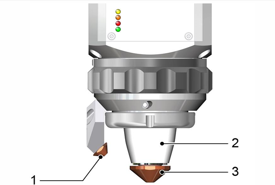
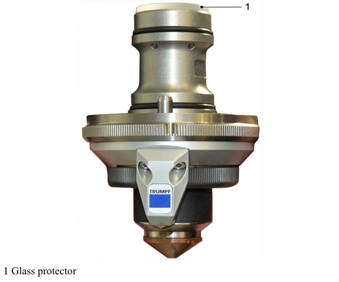
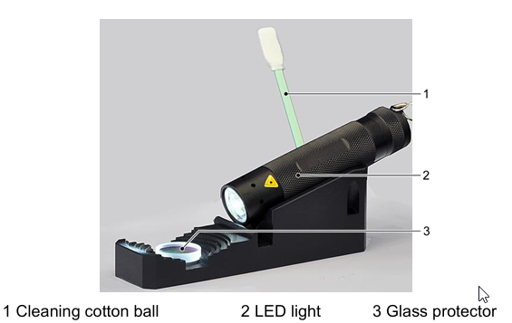
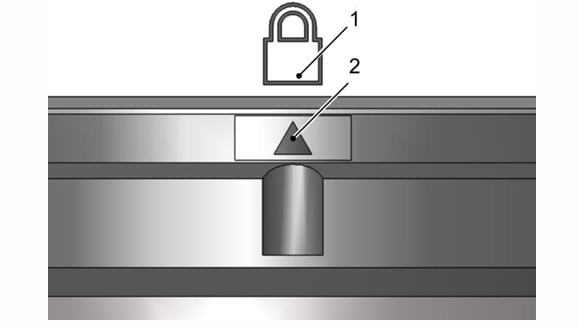

Clean laser head, lens and nozzle
Clean the ceramic body

1 Transverse mouthpiece (blow wash nozzle)
2 Ceramic body
3 Cutting nozzle
Steps
-
Check the ceramic body (2) and clean it when it is dirty.
-
Do not run the machine tool when the ceramic is faulty.
Replace the damaged parts immediately.
Clean the cutting nozzle and transverse mouthpiece and replace them if necessary
Auxiliary tools, tools and materials:
◼ Protective gloves.
◼ Clean, lint-free cloth.
◼ Soft brush
|
Note
|
Clean the cutting nozzle at short intervals as required, and replace it if necessary. WARNING: The nozzle temperature may be too high when replacing directly the nozzle after the machine tool is running! Risk of burning. |
➢ Wear protective gloves when handling high temperature nozzles.
1 Transverse mouthpiece (blow wash nozzle) 2 Ceramic body 3 Cutting nozzle
Steps
-
Press Process, Laser, Equipment Position. Drive the shaft of the machine tool to a position where it is easy to reach the cutting unit.
-
Unscrew the cutting nozzle (3) and the transverse mouthpiece (1).
-
Check whether the nozzle is deformed, whether the nozzle area is scratched, and whether the nozzle is secure.
-
Carefully clean the nozzle with a brush. - Remove the slags and residue with a cloth. - Remove the slags with a soft brush.
-
Replace the damaged welding nozzle.
Check the resistance between the pallet changer and the cutting device housing
➢ Request JFY’s maintenance service department to provide technical support.
Check the glass protector
Auxiliary tools, tools and materials
◼ Complete optical cleaning kit.
◼ Glass protector D34.
◼ Glass protector bracket.
◼ LED light
◼ Rubber bellows.
◼ Special adhesive tape for processing head.
◼ Methanol (bottled).
◼ Cleaning swab.
◼ Finger guards.
◼ Hook wrench.
Prompt
◼ Try not to wipe the glass protector when it is placed on the machine tool, but wipe it in a clean room.
◼ Only put the glass protector on a soft lint-free cloth and clean it with clean hands and finger guards.
◼ The main switch on the electric control cabinet can be kept on.
|
Note
|
Methanol has the risk of poisoning! |
➢ Do not inhale formaldehyde vapor or swallow formaldehyde.
➢ Guarantee a fresh air environment.
➢ Wash hands after cleaning.

1 Glass protector
Steps
-
Clean or replace the glass protector according to the glass condition.
-
Loosen the knurled nut with the hook wrench and unscrew it completely.
-
Cover the opening on the cutting device with special adhesive tape for processing head to ensure that no dust enters the cutting device.
Prompt
The glass protector on the bracket of the cutting device is loose.

1 Cleaning cotton ball
2 LED light
3 Glass protector
Switch on the LED light (2) and place it on the glass protector bracket. - Only grasp the edge of the glass protector (3) and place it on the glass protector bracket.
Prompt
◼ The cleaning swab can only be used once.
◼ The scorch marks or caked deposits cannot be removed with the cleaning swabs. In this case the glass protector must be replaced.
◼ Don’t look directly at the bright white light of the lamp.
Check the glass protector
-
Wet the cleaning swab (1) with methanol, and carefully remove the dirt on the glass protector. Turn the glass protector and repeat the cleaning steps with
a clean cleaning swab.
2 Clean the sealing surface, inner tube filler and thread with
a wet cleaning swab.
3 Install the glass protector into the tube filler. Pay attention
to the O-ring on the glass protector, and do not damage it.
4 Install the tube filler and tighten the knurled nut with a hook wrench until the arrow is just below the lock mark.

1 Lock mark
2 Arrow